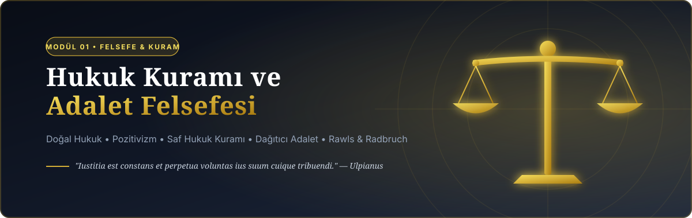
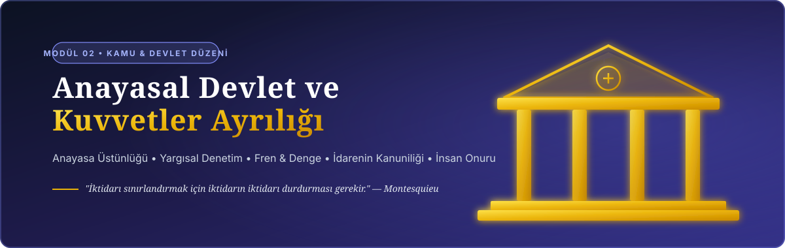
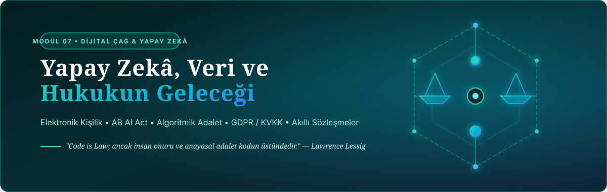

Tematik Alan Vitrini
Görsellere tıklayarak ilgili modüle filtreleyebilirsiniz


Tüm Dokümanlar ve İncelemeler
Yükleniyor...Aramanızla Eşleşen Sonuç Bulunamadı
Lütfen farklı bir anahtar kelime veya filtre seçiniz.